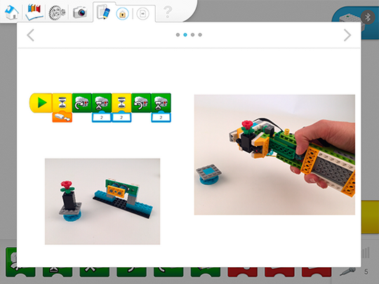

Utiliser l’outil de documentation
Les élèves doivent prendre du temps pour compiler les informations qu’ils ont collectées tout au long du projet.
En fonction des compétences sur lesquelles vous souhaitez mettre l’accent, vous pouvez demander à chaque équipe un ou plusieurs des éléments suivants :
-
une esquisse de leur stratégie (décomposition)
-
une vidéo de leur main robotique ramassant et plaçant différents objets (évaluation)
-
une vidéo les montrant en train d’expliquer leur solution (abstraction)
-
une capture d’écran de leur séquence de programmation (pensée algorithmique)
-
une explication de leur programme (pensée algorithmique)
-
des images et explications de certains des tests qu’ils ont réalisés au cours du projet (évaluation)
